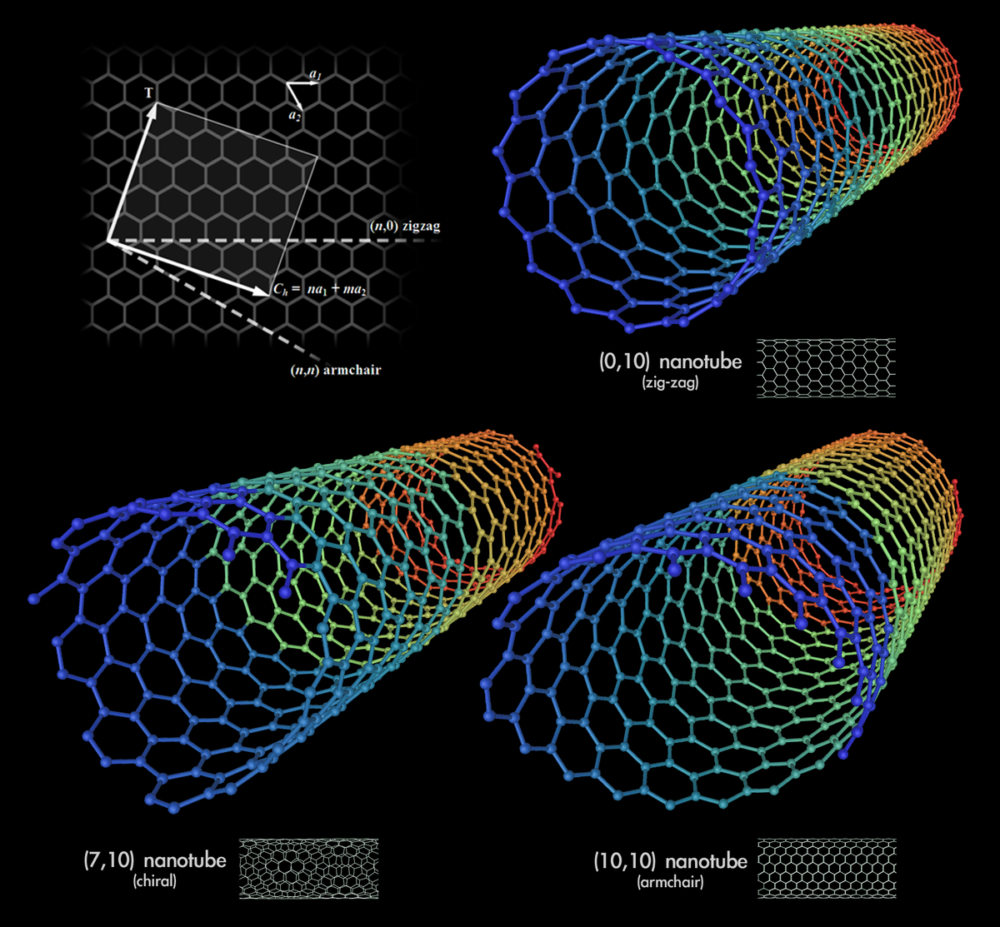

Els nanotubs són estructures tubulars de carboni de diàmetre de l'ordre del nanòmetre. Actualment s'estudien activament a causa de les possibles aplicacions que se'n poden derivar per desenvolupar tecnologia a l'escala nanomètrica i aprofitar els fenòmens quàntics. En química, es denominen nanotubs les estructures tubulars amb un diàmetre de l'ordre del nanòmetre.
Al clicar a sobre de la image ens porta a wikipédia, a l'entrada de la paraula nanotubs:
Els nanotubs solen presentar una elevada relació longitud/radi, ja que el radi sol ser inferior a un parell de nanòmetres i, tanmateix, la longitud pot arribar a ser fins i tot de 105 nm. A causa d'aquesta característica es poden considerar com unidimensional [2]
Si les propietats elèctriques són, de per si, sorprenents, les propietats mecàniques poden arribar a ser-ho encara més. L'estabilitat i robustesa dels enllaços entre els àtoms de carboni, del tipus sp², els proporciona la capacitat de ser la fibra més resistent que es pot fabricar.